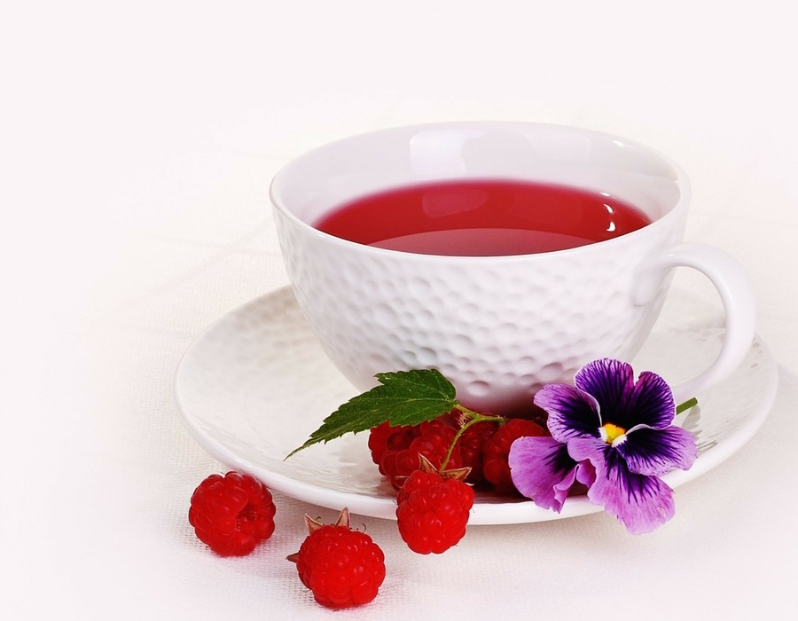

About
Hiya! My name is Orchid Tea and I am an aspiring Web Designer. Well not yet, but I’m currently navigating my adventures to become one. Right now my status is Rookie Blogger hehehe…
In this blog, you’ll come across my past projects on Google Slides to sharing my deepest darkest tea. It’s not easy to talk about myself, so typing is more of my comfort zone. #introvertxD
In my spare time, I would drink sweet/bitter tea, ride my bike in the park, and having some downtime with romance dramas in my bed.